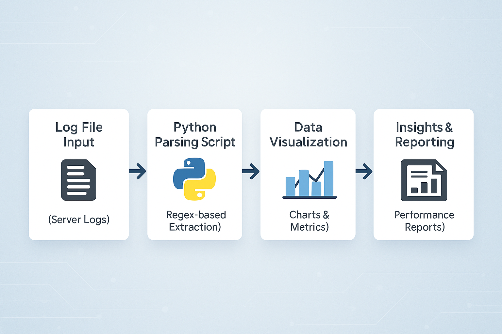

Python Data Parsing for Log File Analysis

Duration: May 2020 - Jun 2020
Project Overview: Developed a Python script to parse and analyze server log files to extract useful metrics such as error rates, response times, and traffic patterns. The script was designed to automate the process of log file analysis, which previously had been done manually, improving the speed and accuracy of data insights.
Key Achievements:
- Successfully built a Python script using regular expressions to filter and process log entries.
- Automated data extraction from various log formats (e.g., Apache, Nginx, custom logs).
- Visualized parsed data using Python libraries like Matplotlib to create reports on server performance.
- Optimized the script to handle large log files with minimal memory usage, improving processing time by 30%.
Skills:
Python · Data Parsing · Regular Expressions (Regex) · Log File Analysis · Data Visualization · Automation